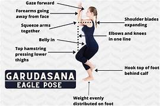
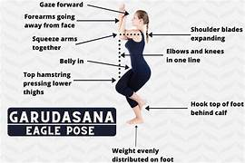

There are numerous yoga asanas (postures) that target different areas of the body and provide various physical and mental benefits. Here's a selection of yoga asanas, categorized based on their focus:
 

Yoga, an ancient practice originating in India, encompasses a wide array of postures, known as asanas, each offering unique physical and mental benefits.
To gain the full benefits and ensure safety, practitioners, especially beginners, are encouraged to seek guidance from certified yoga instructors and consider individual health conditions. Always consult with healthcare professionals if there are concerns about starting a new yoga practice.
Standing Poses:
- Tadasana (Mountain Pose):
- Improves posture and balance.
- Strengthens thighs, knees, and ankles.
- Virabhadrasana I (Warrior I):
- Strengthens legs, shoulders, and arms.
- Opens the hips and chest.
- Virabhadrasana II (Warrior II):
- Stretches and strengthens the legs.
- Opens the hips and chest.
Forward Bends:
- Uttanasana (Forward Fold):
- Stretches the hamstrings and calves.
- Calms the mind and relieves stress.
- Paschimottanasana (Seated Forward Bend):
- Stretches the spine, hamstrings, and lower back.
- Calms the nervous system.
Backbends:
- Bhujangasana (Cobra Pose):
- Strengthens the spine and glutes.
- Opens the chest and improves posture.
- Ustrasana (Camel Pose):
- Stretches the front of the body.
- Improves flexibility in the spine.
Twists:
- Marichyasana (Seated Twist):
- Aids digestion and detoxification.
- Stretches the spine and shoulders
- Ardha Matsyendrasana (Half Lord of the Fishes Pose):
- Increases spinal flexibility.
- Stimulates abdominal organs.
Balancing Poses:
- Vrikshasana (Tree Pose):
- Improves balance and concentration.
- Strengthens the legs and core.
- Garudasana (Eagle Pose):
- Enhances balance and focus.
- Stretches the shoulders and upper back.
Inversions:
- Sirsasana (Headstand):
- Strengthens the core and shoulders.
- Increases blood flow to the brain.
- Salamba Sarvangasana (Shoulderstand):
- Stimulates the thyroid gland.
- Improves circulation and calms the nervous system.